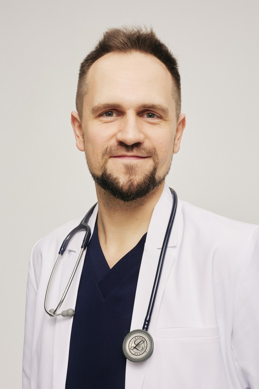
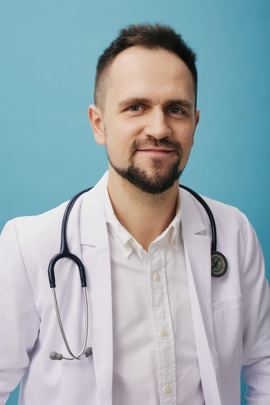
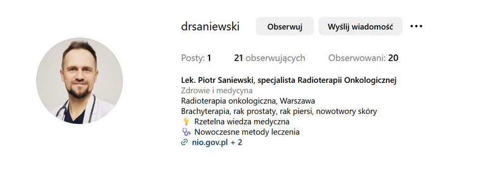
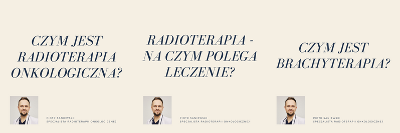

Piotr Saniewski
LEKARZ SPECJALISTA RADIOTERAPII ONKOLOGICZNEJ
Jestem lekarzem z niemal 10-letnim
doświadczeniem zawodowym, a od 2022 roku
— specjalistą radioterapii onkologicznej.
Od ponad 8 lat jestem związany z Narodowym Instytutem Onkologii
im. Marii Skłodowskiej-Curie — Państwowym
Instytutem Badawczym (NIO-PIB), gdzie na co dzień
zajmuję się radioterapią oraz brachyterapią nowotworów.

Kilka słów o sobie
-
Staże zagraniczne
W październiku 2024 odbyłem staż kliniczny w Fondazione Policlinico Universitario Agostino Gemelli IRCCS w Rzymie — jednym z wiodących ośrodków onkologicznych w Europie, który łączy nowoczesną technologię z podejściem holistycznym do pacjenta. Z kolei w kwietniu 2025 roku miałem zaszczyt odbyć staż w Massachusetts General Hospital (MGH) w Bostonie — renomowanym, światowej klasy ośrodku radioterapii, będącym afiliowanym szpitalem Harvard Medical School.
Dodatkowo ukończyłem studia podyplomowe na Harvard Medical School z zakresu genomiki nowotworów i onkologii precyzyjnej (Cancer Genomics and Precision Oncology), co pozwoliło mi jeszcze bardziej pogłębić wiedzę w dziedzinie nowoczesnej onkologii i opieki nad pacjentem onkologicznym.

Moją codzienną pracę definiują: rzetelność, indywidualne podejście do pacjenta oraz nieustanne dążenie do doskonałości w leczeniu chorób nowotworowych.
Uważam, że fundamentem skutecznego leczenia jest relacja pacjent-lekarz oparta na zaufaniu, współpracy i wzajemnym zrozumieniu.
Dlatego dużą wagę przywiązuję do szczerej rozmowy, uważnego słuchania i jasnej komunikacji, które pomagają pacjentom lepiej zrozumieć proces leczenia i poczuć się bezpiecznie w trudnym czasie choroby.
Zainteresowania
Szczególny obszar moich zainteresowań stanowi leczenie raka prostaty, raka piersi oraz nowotworów skóry. Stale rozwijam swoją wiedzę i umiejętności, uczestnicząc w licznych konferencjach naukowych, kursach oraz międzynarodowych zjazdach poświęconych nowoczesnym metodom leczenia nowotworów.
RADIOTERAPIA
ONKOLOGICZNA
Teleradioterapia
Jest to najczęstszy rodzaj radioterapii. Promieniowanie pochodzi z urządzenia (akceleratora liniowego), które znajduje się na zewnątrz ciała pacjenta.
Umów sięBrachyterapia
Brachyterapia to specjalistyczna metoda radioterapii, w której źródło promieniowania umieszczane jest bezpośrednio w guzie nowotworowym lub bardzo blisko niego.
Umów sięChcąc dzielić się rzetelną, opartą na faktach wiedzą medyczną stworzyłem profile na portalach Instagram oraz Facebook, na których regularnie publikuję posty dotyczące dziedziny jaką jest radioterapia onkologiczna.
Chcę przybliżać temat radioterapii onkologicznej w sposób przystępny, zrozumiały i przyjazny — zwłaszcza dla pacjentów, którzy często po raz pierwszy stykają się z tym obszarem medycyny w trudnym momencie swojego życia.
Przeczytaj więcej
